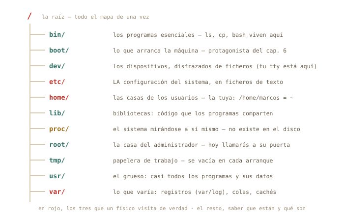
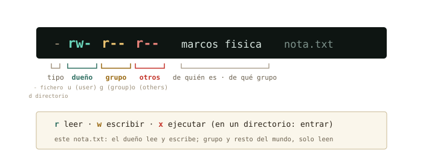

4 El árbol y los permisos
Ya hablas con la máquina; empieza el bloque B: abrir el capó. Hoy recorres el mapa completo del árbol — qué vive de verdad en cada rama —, descubres que tu sistema es multiusuario hasta la médula, entiendes por fin qué firma exactamente ese sudo que tecleas con fe, y aprendes a leer el idioma rwx que llevas dos capítulos viendo pasar en cada ls -l.
Al terminar esta sesión sabrás
- Orientarte por el árbol completo: qué hay en
/etc,/home,/var,/usr,/tmp— y qué rareza es/proc. - Quién eres para el sistema: usuarios, grupos, y el fichero donde está apuntado todo el censo.
- Qué es
root, qué hacesudode verdad, y por qué te pide tu contraseña y no otra. - Leer de un vistazo los permisos
rwxde cualquier fichero, y cambiarlos conchmod. - Convertir tus tuberías del capítulo 3 en tu primer script ejecutable.
- Localizar dónde guardan su configuración bash, conda y Jupyter — la tuya y la del sistema.
4.1 El mapa del territorio
En el capítulo 1 asomaste la cabeza a la raíz; hoy toca el mapa entero. Cada directorio de / tiene un oficio, y el reparto no es casualidad: es un estándar — el Filesystem Hierarchy Standard — que comparten casi todos los Linux del mundo. Apréndete el plano una vez y te orientarás en cualquier máquina que toques el resto de tu vida, incluido el clúster de cálculo que te espera en unos años.

/etc), tu casa (/home) y los registros (/var/log).
Compruébalo sobre tu propia máquina, con las herramientas que ya tienes:
marcos@portatil:~$ ls /
bin boot dev etc home lib media mnt opt proc root run sbin srv tmp usr var
marcos@portatil:~$ ls /etc | wc -l
228Doscientos y pico ficheros de configuración — la tubería del capítulo 3 acaba de contarlos sin despeinarse. Fíjate en la idea de fondo, porque es la misma que viste con .bashrc: en Linux, configurar el sistema es editar ficheros de texto en /etc. No hay registro opaco ni caja negra: está todo ahí, legible con less.
◉ Por dentro · /proc, el directorio que no existe
Haz cat /proc/uptime: dos números, los segundos que lleva encendida la máquina. Ese «fichero» no está en tu disco — /proc es una ventana que el kernel fabrica al vuelo para contarte su estado, disfrazada de directorio para que puedas usar cat, grep y compañía sobre ella. Prueba grep "model name" /proc/cpuinfo: acabas de interrogar a tu procesador con las herramientas del capítulo 3. «Todo es un fichero» no era una metáfora: es la decisión de diseño más rentable de Unix.
4.2 Quién eres: usuarios y grupos
whoami te lo dijo el primer día; la respuesta completa la da id:
marcos@portatil:~$ id
uid=1000(marcos) gid=1000(marcos) grupos=1000(marcos),4(adm),24(cdrom),27(sudo),30(dip),46(plugdev)Para el sistema no eres «marcos»: eres el uid 1000 — el nombre es un alias para humanos. Y perteneces a grupos: bolsas de usuarios a las que se conceden permisos en bloque. Ahí en medio hay uno que va a protagonizar la siguiente sección: sudo.
¿Y dónde está apuntado el censo? En un fichero de texto de /etc, naturalmente:
marcos@portatil:~$ less /etc/passwd
root:x:0:0:root:/root:/bin/bash
daemon:x:1:1:daemon:/usr/sbin:/usr/sbin/nologin
...
marcos:x:1000:1000:Marcos,,,:/home/marcos:/bin/bashCada línea, un usuario; los campos, separados por : — uid, casa, shell. Dos sorpresas al leerlo: la primera línea es root, con uid 0; y hay docenas de usuarios que no son personas (daemon, www-data…) — cuentas de servicio con las que el sistema se reparte a sí mismo el trabajo, cada una con los permisos justos de su oficio.
◷ Historia · Los permisos nacieron porque el ordenador era de todos
En los 70, «tener ordenador» significaba compartir el ordenador del departamento: decenas de terminales enchufados a una sola máquina Unix, cada usuario con su cuenta, todos a la vez — el tiempo compartido. En ese mundo, que tus ficheros no fueran legibles por el resto no era paranoia: era convivencia. Tu portátil ya no se comparte, pero heredó intacto aquel esqueleto multiusuario — y le sigue sacando partido: cada servicio corre como un usuario distinto para que un fallo en uno no arrastre al sistema. Y en el clúster de cálculo al que te conectarás algún día, el tiempo compartido sigue siendo, literalmente, la forma de vida.
4.3 root y sudo: llamar a la puerta del administrador
root, uid 0, es el superusuario: el único para quien los permisos no existen. Puede leerlo todo, borrarlo todo, romperlo todo. Por eso en Mint nadie trabaja como root — ni siquiera tú, que administras tu propia máquina. Compruébalo intentando entrar en su casa:
marcos@portatil:~$ ls /root
ls: no se puede abrir el directorio '/root': Permiso denegado
marcos@portatil:~$ sudo ls /root
[sudo] contraseña de marcos:
marcos@portatil:~$Ahí está el mecanismo civilizado: sudo (superuser do) ejecuta una única orden con los poderes de root, y deja constancia en el registro del sistema de quién la pidió y cuándo. Pide tu contraseña — no una «contraseña de root» — porque lo que comprueba es que tú eres tú y que estás autorizado: miembro del grupo sudo que viste en id. La orden terminó, y volviste a ser el uid 1000 de siempre. Poderes de administrador de usar y tirar, con recibo.
△ Cuidado · sudo firma con tu nombre
Con sudo delante, rm ya no protege nada: puede vaciar el sistema entero. La regla del curso es doble. Uno: jamás teclees un sudo que no entiendas — y eso incluye los que te sugiera una IA o un foro (cuando llegue el anexo sobre IA verás cómo verificarlos con man antes). Dos: lo destructivo de verdad — particionar, formatear, reinstalar — no se practica aquí, sino en la máquina virtual del bloque C, donde romper es gratis.
4.4 Leer rwx de un vistazo
Llevas desde el capítulo 1 viendo cosas como -rw-r--r-- en cada ls -l y esquivándolas educadamente. Se acabó: son diez caracteres con una gramática exacta.

Sobre un directorio, x no significa «ejecutar» sino entrar: sin esa x no puedes hacer cd dentro. Y ahora ya puedes leer entradas de ls -l como un nativo:
marcos@portatil:~$ ls -l /etc/shadow
-rw-r----- 1 root shadow 1523 ago 20 10:11 /etc/shadow
marcos@portatil:~$ cat /etc/shadow
cat: /etc/shadow: Permiso denegadoTraducción: dueño root (lee y escribe), grupo shadow (solo lee), y los demás — tú — nada. Por eso el cat rebota. Ese fichero guarda los hashes de las contraseñas: es el ejemplo perfecto de un permiso haciendo exactamente su trabajo. Compáralo con su vecino /etc/passwd (-rw-r--r--): el censo es público, las contraseñas no.
Cambiar permisos es chmod (change mode), y su dialecto simbólico se lee solo: a quién (u, g, o), qué gesto (+ da, - quita), qué permiso (r, w, x):
marcos@portatil:~/fisica$ chmod go-r pendulo_v1.csv
marcos@portatil:~/fisica$ ls -l pendulo_v1.csv
-rw------- 1 marcos marcos 428 ago 24 11:02 pendulo_v1.csvGrupo y otros acaban de perder la lectura: ese dato ya solo lo ves tú. (También existe chown para cambiar el dueño, pero regalar ficheros es cosa de root — te cruzarás con él al administrar tu servidor.)
4.5 Tu primer script ejecutable
Y aquí es donde los capítulos 2, 3 y 4 se dan la mano. Aquella tubería del análisis que tecleabas una y otra vez — ¿y si fuera un programa? Escríbela en un fichero con nano informe.sh:
#!/bin/bash
echo "Informe de adquisicion"
grep -c ERROR adquisicion.log
grep ERROR adquisicion.log | cut -d' ' -f4 | sort | uniq -c | sort -nrLa primera línea — el shebang #! — le dice al sistema qué intérprete ejecuta esto: bash. El resto es, literalmente, lo que tecleabas. Dale el permiso que le falta y estrénalo:
marcos@portatil:~/Descargas$ chmod u+x informe.sh
marcos@portatil:~/Descargas$ ./informe.sh
Informe de adquisicion
108
90 s3
15 s1
3 s4Acabas de escribir un programa. El ./ delante significa «el de este directorio» — por qué hace falta exactamente eso lo entenderás en el capítulo 5, cuando abramos el $PATH. La idea que importa hoy: un script no es más que comandos guardados, y x es lo que lo convierte de apunte en herramienta.
✚ Truco · Los permisos, también con ratón
Todo este sistema rwx lo tienes en la vía gráfica: clic derecho sobre cualquier fichero en el gestor de archivos → Propiedades → pestaña Permisos. Son las mismas casillas de leer, escribir y ejecutar para dueño, grupo y otros. Para un fichero suelto es perfectamente digno; la terminal gana cuando son doscientos — o cuando estás en un servidor sin escritorio, que es tu futuro próximo.
4.6 La expedición de las configuraciones
El caso práctico del capítulo, y una pregunta que te harás mil veces: ¿dónde guarda su configuración este programa? La respuesta tiene un patrón — la del sistema en /etc, la tuya en dotfiles de tu casa — y ya tienes herramientas para verificarlo:
marcos@portatil:~$ ls -a ~ | grep -i conda
.conda
.condarc
marcos@portatil:~$ ls ~/.jupyter
jupyter_notebook_config.py
marcos@portatil:~$ ls /etc/jupyter 2> /dev/nullAhí está tu ecosistema científico: .condarc (tus canales y entornos de conda), ~/.jupyter (tu Jupyter), .bashrc (tu shell, del capítulo 2). Ninguno necesita sudo: son tuyos, en tu casa. Cuando un programa «se comporta raro» en tu cuenta pero no en la de otro, la explicación vive casi siempre en uno de estos ficheros ocultos — ahora sabes dónde mirar. (¿Y ese 2> /dev/null del final? Los tres chorros del capítulo 3: manda las quejas al agujero negro del sistema. Si /etc/jupyter no existe, silencio en vez de error — útil cuando solo exploras.)
4.7 Práctica: inspección general
Cuaderno en marcha (script sesion04.log) y a explorar tu propia máquina. Ningún ejercicio de hoy modifica nada fuera de tu casa.
Ejercicio 4.1 · El censo de /etc
¿Cuántas entradas tiene tu /etc? ¿Qué Linux exacto ejecutas? (Pista: la respuesta está en /etc/os-release, y grep PRETTY la aísla.)
ls /etc | wc -l (en torno a 200, según lo instalado) y grep PRETTY /etc/os-release → PRETTY_NAME="Linux Mint 22.2" (o tu versión).
Por qué así — Todo son ficheros de texto, así que las herramientas del capítulo 3 valen también para interrogar al sistema. Ese os-release es exactamente lo que los programas leen cuando quieren saber dónde están corriendo.
Ejercicio 4.2 · Leer el censo
Usando /etc/passwd y tuberías: ¿cuántas cuentas hay en total en tu sistema? ¿Cuáles son personas de verdad? (Pista: las personas tienen su casa en /home — y grep sabe buscar eso.)
Total: wc -l /etc/passwd (unas 40–50). Personas: grep /home /etc/passwd | cut -d':' -f1 — probablemente solo tú.
Por qué así — El separador aquí es :, y cut -d':' -f1 recorta el nombre igual que recortaba sensores en el log. El resto de cuentas son los usuarios de servicio: el sistema repartiéndose el trabajo con permisos mínimos.
Ejercicio 4.3 · Tus credenciales
Con un solo comando y sin leer ficheros: comprueba si tu usuario pertenece al grupo sudo.
id | grep sudo — si tu línea de id aparece (con 27(sudo) iluminado), estás dentro. También valía groups, que lista solo los nombres.
Por qué así — id escupe texto y grep filtra texto: la componibilidad del capítulo 3 aplicada a la administración. Estar en ese grupo es lo que hace que sudo te acepte; en un ordenador del laboratorio, probablemente no lo estarás — y ahora entiendes por qué.
Ejercicio 4.4 · Detective de permisos
Ejecuta ls -l /etc/passwd /etc/shadow /usr/bin/nano /tmp (el último con ls -ld /tmp: la d hace que describa el directorio en vez de su contenido). Traduce a palabras los permisos de cada uno. ¿Cuál puede leer todo el mundo pero escribir solo root? ¿En cuál puedes escribir tú?
/etc/passwd → -rw-r--r--: censo público, lo escribe solo root. /etc/shadow → -rw-r-----: ni leerlo puedes. /usr/bin/nano → -rwxr-xr-x: todo el mundo lo ejecuta, solo root lo modifica — así deben ser los programas del sistema. /tmp → drwxrwxrwt: escribible por todos (esa t final es un matiz — impide borrar lo ajeno — que puedes archivar como curiosidad).
Por qué así — Cuatro ficheros, cuatro políticas distintas, y las cuatro se leen de un vistazo con la figura del capítulo. Los permisos no son burocracia: son el diseño de seguridad del sistema, escrito en diez caracteres.
Ejercicio 4.5 · De tubería a herramienta
Crea el script diagnostico.sh que imprima: quién eres, en qué máquina estás (hostname), la fecha, y cuánto lleva encendido el equipo (/proc/uptime). Hazlo ejecutable y ejecútalo dos veces — comprueba que la fecha cambia y el uptime crece.
Con nano diagnostico.sh:
#!/bin/bash
whoami
hostname
date
cat /proc/uptimeDespués chmod u+x diagnostico.sh y ./diagnostico.sh.
Por qué así — Es el patrón completo de la sección: comandos guardados + shebang + u+x + ./. Cuando administres tu servidor, tus scripts de diagnóstico serán exactamente esto con más líneas. El uptime que crece entre ejecuciones te confirma que /proc se fabrica al vuelo: dos lecturas, dos realidades.
Ejercicio 4.6 · sudo, con recibo
Ejecuta ls /root sin y con sudo. Después reflexiona por escrito en tu cuaderno (una frase vale): ¿por qué es mejor este diseño — pedir permiso orden a orden — que trabajar directamente como root todo el rato?
Sin sudo: permiso denegado. Con él: tu contraseña, y la casa de root (probablemente casi vacía). La reflexión, en la dirección de: como root, cualquier errata es potencialmente fatal — un rm mal apuntado, un espacio de más como el del capítulo 2. Con sudo elevas los privilegios solo el segundo que hacen falta, y cada uso queda registrado con tu nombre.
Por qué así — Es el principio de mínimo privilegio, y es idéntico al del laboratorio: la llave del armario de isótopos no se lleva en el bolsillo todo el día; se pide, se usa, se devuelve, y queda apuntado. Cierra el cuaderno: exit, y a la colección sesion04.log.
4.8 Autocomprobación
Marca una respuesta por pregunta; la corrección es inmediata.
¿Dónde vive la configuración del sistema en Linux?
/etc: legible con less, buscable con grep, editable con nano (y sudo)./etc es texto plano a la vista. /tmp es la papelera de trabajo.El usuario con uid 0 es…
root. Tu usuario de la instalación es el 1000 — compruébalo con id.¿Qué hace exactamente sudo ls /root?
sudo eleva una única orden y registra quién la pidió; la contraseña es la tuya, no la de root. Poderes de usar y tirar.Un fichero muestra -rw-r----- con dueño root y grupo shadow. Tú no estás en ese grupo. ¿Qué puedes hacer con él?
---. Es la política de /etc/shadow haciendo su trabajo.---. Ni leer, ni escribir, ni ejecutar — revisa la figura del decodificador.Sobre un directorio, el permiso x significa…
x, el cd rebota. La r lista nombres; la x deja pasar.x es la llave de la puerta: permite entrar con cd. Lo que hagan los ficheros de dentro depende de sus propios permisos.Escribes un script y al hacer ./analisis.sh el shell dice «Permiso denegado». ¿Qué falta?
sudo no pinta nada aquí — y desconfía del reflejo de añadirlo «a ver si cuela».x. chmod u+x lo convierte de apunte en herramienta.Autocomprobación (test de la sección 4.8) — Respuestas: 1 a · 2 b · 3 b · 4 b · 5 a · 6 b.
La próxima sesión
Sabes quién puede tocar qué; el capítulo 5 pregunta qué está pasando ahora mismo: procesos, top, señales y el arte de matar un programa colgado. Y la otra mitad del capó: qué hace de verdad el gestor de software de Mint por debajo — apt, repositorios, dependencias — y el misterio de por qué a veces python no es el Python que crees. Guarda sesion04.log.
cap. 4 v0.1 · piloto — anota tiempo real invertido, dudas y erratas junto a tu sesion04.log